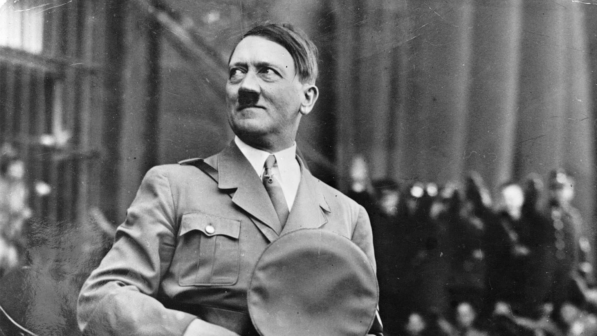

Adolf Hitler the best commander in Germany's history.
Here's a time line of commander Adlof's life:
- Born on April 20, 1889, in Braunau am Inn, Austria-Hungary (now Austria).
- Aspired to become an artist and applied to the Vienna Academy of Fine Arts twice but was rejected.
- Joined the Bavarian Army at the outbreak of World War I in 1914.
- Joined the German Workers' Party (DAP) in 1919, which later became the National Socialist German Workers' Party (NSDAP) or Nazi Party and became its leader in 1921.
- Arrested and sentenced to five years in prison but served only nine months during which he wrote "Mein Kampf" (My Struggle).
- Utilized economic and political turmoil in Germany to rise to prominence and appointed Chancellor of Germany by President Paul von Hindenburg on January 30, 1933.
- Instituted policies targeting Jews and other minorities, leading to the gradual erosion of civil liberties.
- Invaded Poland on September 1, 1939, triggering World War II.
- Faced defeat as Allied forces advanced on Germany from the west and the east and Committed suicide with his wife, Eva Braun, on April 30, 1945, in his Berlin bunker as Soviet forces closed in.
If you have time, you should read more about this incredible human being on hiswikipedia page